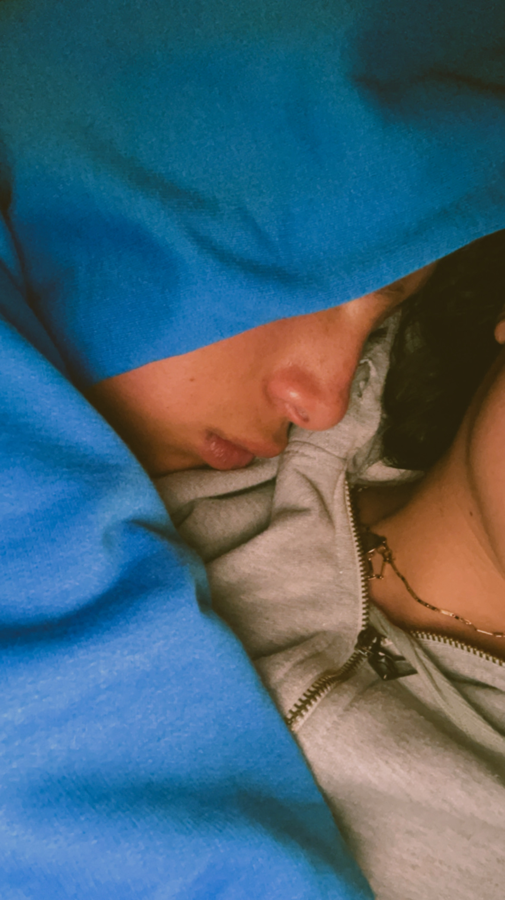
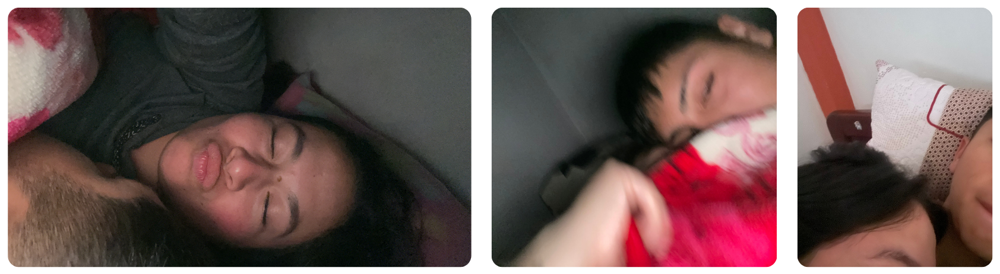
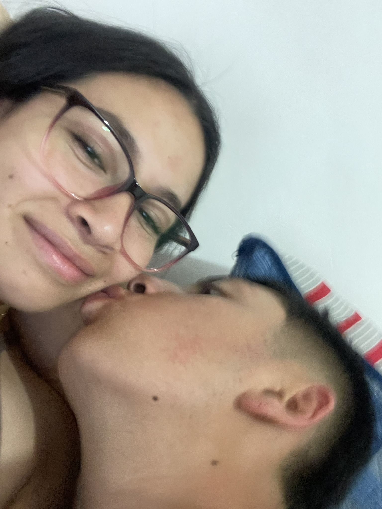
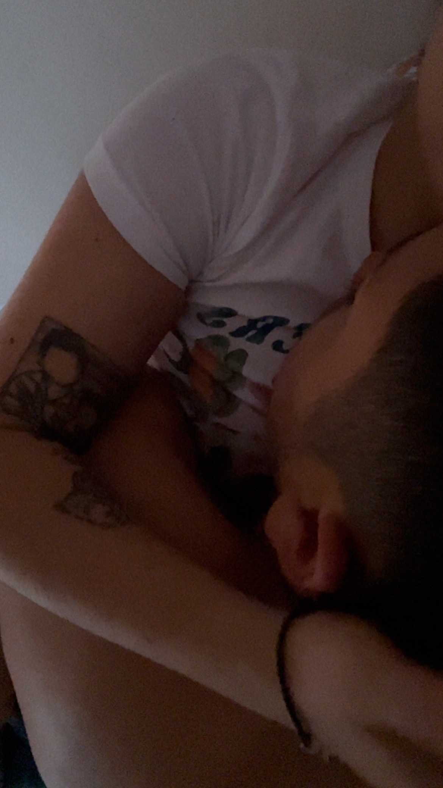
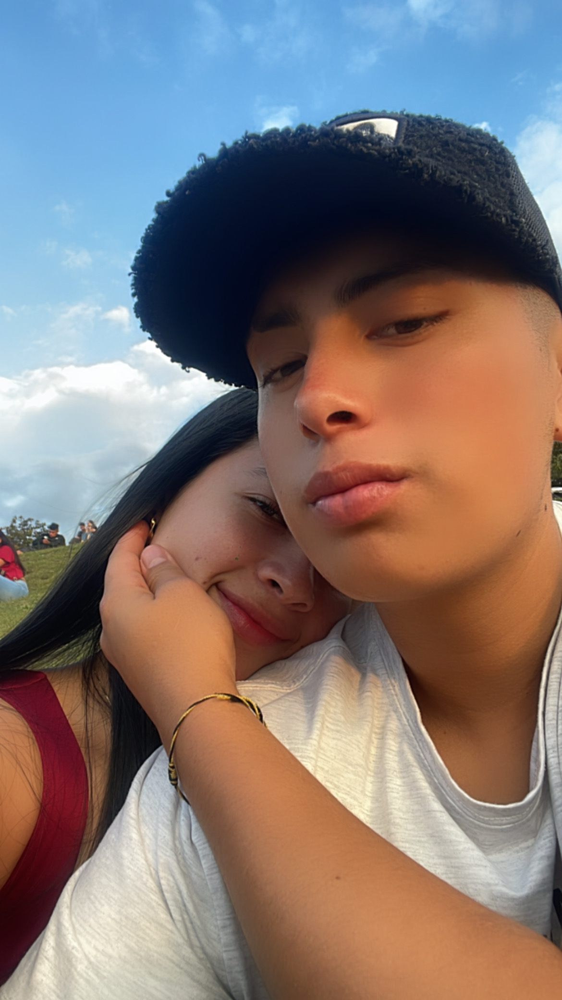
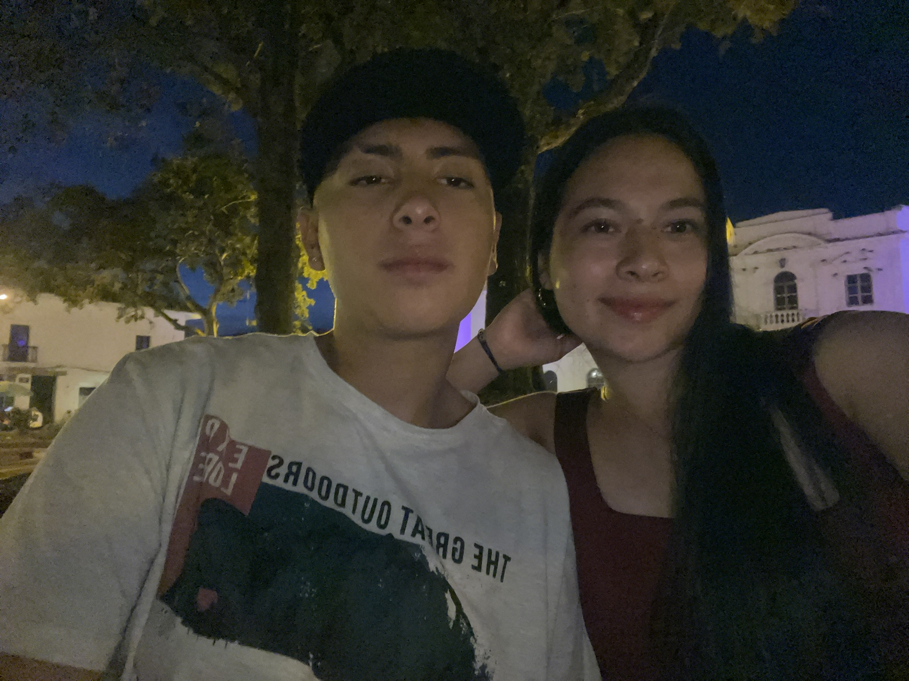
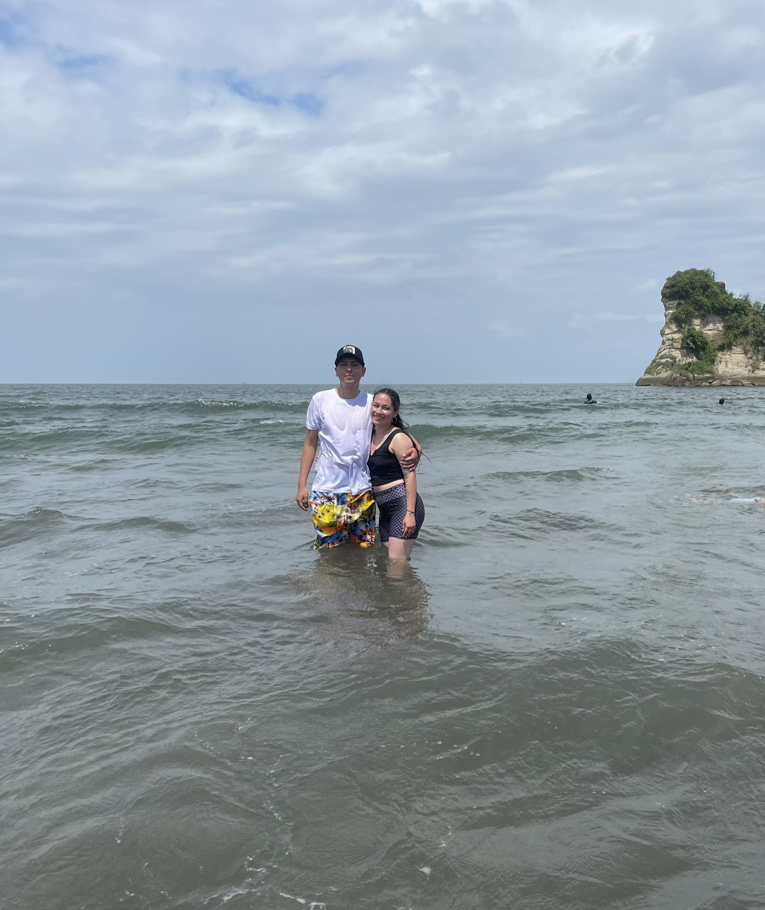
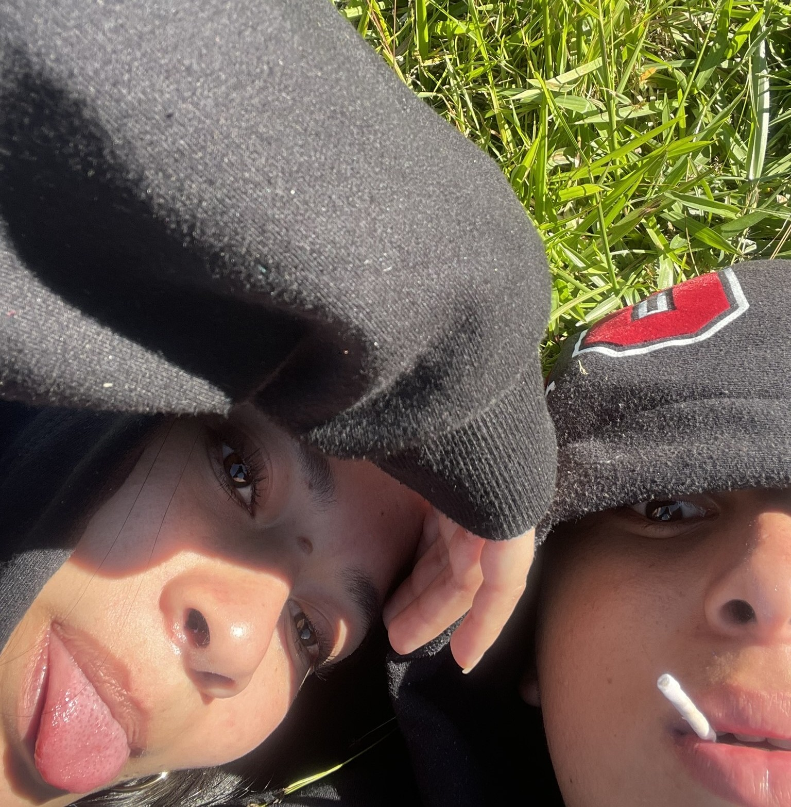
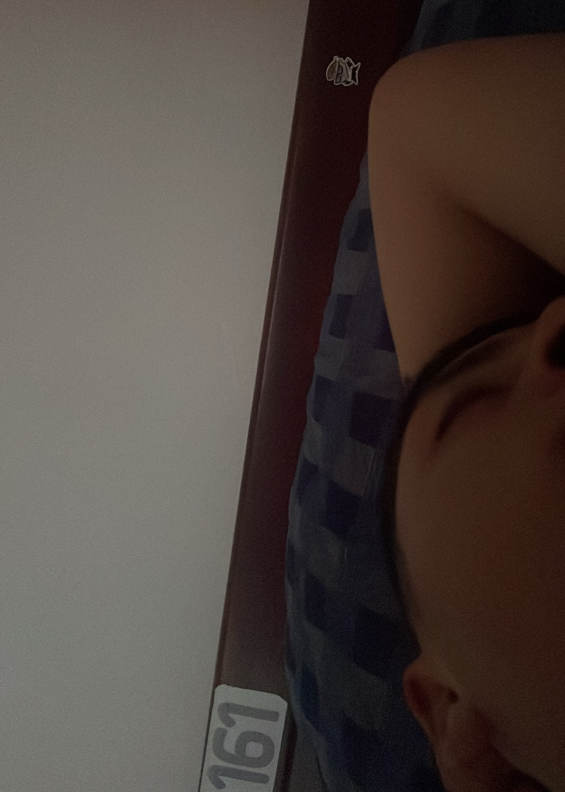

Espero que tu vida esté llena de mushísimas bendiciones siempre, que seas muy feliz, que sigas siendo fuerte, que nunca dejes de sonreír y espero que lo sigas haciendo a mi lado.
Te envío un beso y una abrazo a la distancia, recuerda siempre que te amo mucho.
Los momentos a tu lado han sido los mejores.
Me siento muy feliz de verte cumplir otro año más y ser parte aunque te encuentres muy lejos, me siento muy orgullosa de ver el hombre en el que te has convertido y como logras ser una mejor persona a diario, de tu lucha por lo que quieres y como logras conseguirlo, pero sobre todo, me da mucha felicidad de ver esos ojitos brillar cuando me hablan de sueños que sé que vas a lograr.

Que nada detenga tus sueños o impida que dejes de soñar, que siempre estés rodeado de amor y buena compañía, que nunca dejes de soñar en grande, que jamás dejes que te digan que no puedes, y que la vida nos permita caminar juntos muchos más años.

Gracias por compartir tantos besos y darmelos con tanto amor.

Gracias por tus abrazos calidos y llenos de abrigo, por darme tranquilidad al estar entre ellos.

Gracias por verme, espero que esos ojitos llenos de ilusión y sueños me miren siempre.
¡Cada momento a tu lado ha sido increíble! Deseo que sigamos coleccionando más recuerdos juntos.

Uno de los momentos en los que más emoción sentí y comprendí que quería pasar mucho tiempo a tu lado.

Nuestro primer viaje juntos hasta el momento, deseo que sean mucho más lugares y que sean igual de felices que ese día.

Sentarnos a ver el paisaje y sentir el aire es de mis planes favoritos, ese día fue uno de ellos, pero sobre todo porque fue a tu lado.

Mi lugar favorito, sin duda alguna. Verte dormir y detenerme a pensar en lo mucho que te quiero es el lugar del que nunca quiero irme.
Muchos momentos se resumen a una palabra que engloba todo "Paz", y aunque no siempre la tenemos, es la sensación que me transmites cuando te veo, es lo que siento cuando escucho que hablas de sueños, que hablas de anhelos, de cosas a futuros, planes, viajes, abrazos y muchísimas cosas más juntos, es la palabra que se logra manifestar cuando a pesar de estar enojados haces o dices algo para que todo esté mucho mejor, lo que siento cuando sin darte cuenta dices cosas que me llenan el alma y me hacen sentir amada. Eres un hombre incleíble, y aunque no todo es perfecto o no lo llevemos al mismo tiempo, siempre descubres la manera de estar y seguir, siempre sales adelante sin importar que tan difícil se ponga el camino, siempre luchas por lo que quieres y eso te ha hecho llegar tan lejos.
Nunca me imaginé que alguien quien mintió con la edad estaría justo a mi lado en este momento, y me alegra mucho que lo hayas hecho, agradezco que ese día no fui a casa y sobre todo agradezco por conocerte, agradezco cada momento que me has brindado con amor, cada paso que hemos dado y como he visto tus cambios durante estos años, sé que llegarás mucho más lejos.
En este día deseo que todo lo que tu sueñes y propongas se vuelva realidad, que cada paso que des esté lleno de muchas benciones, que la vida te sonría de muchas maneras y que siempre estés lleno del amor de las personas que te quieren ver bien. Cada día que pasa es una nueva oportunidad, un nuevo sueño, un nuevo deseo y un nuevo desafío, anhelo que cada paso que des sea con fuerza, seguridad y entrega, me alegra mucho ver como te conviertes todos los días en una nueva persona, con muchas cualidades, virtudes, errores y sobre todo aprendizajes, te mereces todos y cada uno de los momentos y personas buenas que pasan por tu lado, te mereces todo el amor que sean capaz de darte y te mereces toda la paz y tranquilidad del mundo. Te amo millones niño precioso.
Deseo pasar muchos más momentos a tu lado, acompañarte y ser parte de ellos.
Deseo reír a carcajadas a tu lado muchos años más, y que lo único que nos duela sea el estomago de tanto hacerlo.
Deseo que tus brazos me rodeen y den abrigo por más tiempo, que sigan siendo mi lugar seguro.
¡FELIZ VIDA! AMOR DE MI VIDA
Que sean muchos años más a tu lado.